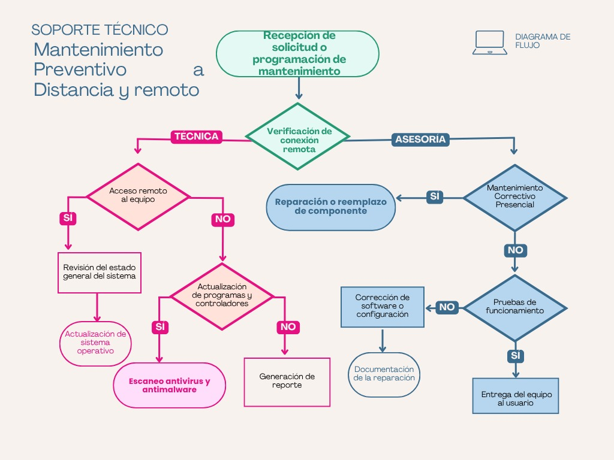

Objetivo del protocolo
El protocolo de soporte remoto establece una ruta ordenada para atender problemas técnicos sin improvisar. Su objetivo es cuidar la comunicación, la privacidad del usuario y la documentación de cada caso.
En Fénix Labs, este protocolo se presenta como parte de una empresa ficticia con fines académicos. No representa un servicio real, pero sí muestra buenas prácticas aplicables al soporte técnico a distancia.
Un protocolo claro permite que el técnico sepa qué hacer, el usuario sepa qué esperar y el caso quede documentado correctamente.
Protocolo paso a paso
1. Recepción del caso
El usuario reporta su problema por llamada, chat, correo o formulario de contacto.
2. Registro inicial
Se anotan datos básicos, equipo afectado, síntomas y canal de comunicación.
3. Diagnóstico preliminar
El técnico hace preguntas para identificar causas probables antes de intervenir.
4. Autorización del usuario
Si se requiere acceso remoto, el usuario debe autorizarlo de forma clara.
5. Aplicación de la solución
Se revisa únicamente lo relacionado con el problema reportado y se explican los cambios.
6. Verificación y cierre
Se confirma el resultado, se registra la atención y se dan recomendaciones.
Diagrama de flujo del soporte remoto
El diagrama de flujo representa el proceso de soporte técnico para mantenimiento preventivo a distancia y remoto. Inicia con la recepción de una solicitud o programación de mantenimiento, después verifica si existe conexión remota y, según el caso, divide la atención en una ruta técnica o una ruta de asesoría.

En la ruta técnica, primero se valida si existe acceso remoto al equipo. Si el acceso está disponible, se revisa el estado general del sistema, se actualiza el sistema operativo y se realiza un escaneo antivirus y antimalware. Si no hay acceso remoto, se revisa si es posible actualizar programas y controladores; cuando no se puede, se genera un reporte.
En la ruta de asesoría, el flujo identifica si el caso requiere mantenimiento correctivo presencial. Si es necesario, se contempla la reparación o reemplazo de componentes. Si no requiere esa intervención, se hacen pruebas de funcionamiento; si fallan, se corrige software o configuración y se documenta la reparación. Si las pruebas son correctas, el equipo se entrega al usuario.
Documentos de apoyo en la carpeta docs
Esta entrada utiliza la carpeta recursos/docs para guardar evidencias y formatos relacionados con el soporte remoto. Estos documentos pueden reemplazarse más adelante por trabajos reales en PDF, Word o imágenes, conservando la misma idea de organización.
| Documento | Uso dentro del protocolo | Enlace |
|---|---|---|
| Hoja de servicio | Registra datos del usuario, problema, diagnóstico y resultado. | Ver abajo |
| Registro de caso | Permite dar seguimiento al estado y cierre de una atención. | Ver abajo |
Vista de la hoja de servicio
Vista del registro de caso
Roles durante la atención
Para que el protocolo funcione, cada participante debe saber qué le corresponde hacer durante la atención.
Cierre y seguimiento del caso
El cierre no debe limitarse a decir que el problema terminó. También debe verificar que el usuario comprendió la solución y que se dejaron recomendaciones preventivas.
- Confirmar con el usuario que la falla fue resuelta.
- Registrar las acciones realizadas durante el soporte.
- Indicar si el caso requiere seguimiento posterior.
- Recomendar medidas para evitar que el problema se repita.
- Cerrar cualquier sesión remota abierta durante la atención.
Etiquetas de la entrada
Fuentes consultadas
Para complementar esta entrada se consultaron recursos relacionados con soporte remoto, documentación de casos y buenas prácticas de atención técnica: